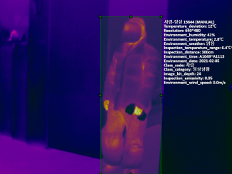

Executive Summary
1.22 million thermal images were gathered to teach AI to spot fires, leaks, and overheating across industrial complexes. AI Hub's Thermal Camera Image Dataset (dataSetSn=235) photographs 10 object types (storage tank, transport pipe, transport valve, switchboard, AC outdoor unit, factory exterior/interior, person, car, ship) in both normal and anomaly states. Across 20 classes, that is 1,223,849 images. DataClinic Report #128 shows where this asset is solid and where it is still soft.
At L1, image channels split into 80% RGBa and 20% RGB, and class counts span an 11.14× spread. In L2's generic neural lens (1,280 dimensions), the median density gap between normal and anomaly sits around 0.45. Switch to L3's domain-optimized lens (120 dimensions) and that gap widens to roughly 1.3, almost 3× wider. Dimensionality optimization sharpens the classification boundary.
Yet some signals remain unreachable by dimensions alone. The most typical Pipe-Normal image (density 2.77) and Pipe-Leak (median ≈ 1.0) form the dataset's most dramatic contrast within a single domain, while the low-density outliers in Person-Normal (D1) and Car-Normal (D30) recur as the same images at rank 1–2 in both L2 and L3. Meanwhile, the high-density top of Person-Anomaly-Identify is occupied by files named CAR_AON_21.02.05_…_D20_: bboxes from a car-anomaly capture session that ended up labeled as person-anomaly. Three threads of the same diagnosis, lined up on one page.
⚠️ Note on missing scores — DataClinic's composite score and L1/L2/L3 grades are gated behind authentication and were not collected by this pipeline. The article avoids asserting absolute scores and grounds its analysis in qualitative findings about distributions, outliers, and labels. Neighbor-report scores appear only in the Comparison Frame section.
📊 DataClinic's Three-Level Diagnostic System
DataClinic looks at a dataset through three lenses of increasing depth. It starts with surface statistics, moves to a generic neural view, and ends with a view tuned to the domain. Each level surfaces finer quality issues than the last.
Basic Quality Diagnostic
Checks dataset hygiene: image channels, resolution, missing values, class balance. This is where the dataset's mixed RGB/RGBa channels and 11× class imbalance first surface.
DataLens — Generic Neural Net (1,280 dim)
Analyzes distribution, geometry, and density in Wolfram ImageIdentify Net V2's 1,280-dimensional feature space. Every image is first seen as a "general image."
Domain-Optimized Lens (120 dim)
Reduces dimensions to fit the domain so its native patterns surface. For this dataset, 1,280 dimensions compress to 120 (≈10.7×), and normal-vs-anomaly separation sharpens about 3×.
Dataset Overview — 1.22M Images Built to Detect Industrial Disasters
Fire, leaks, and overheating are among the most common — and most belatedly noticed — accidents in industrial complexes. By the time the human eye catches them, it is usually too late. Thermal cameras can see the warning signs earlier, and an AI that reads those thermal frames automatically can sound the alarm earlier still. The Thermal Camera Image Dataset (AI Hub dataSetSn=235) is a national-scale AI training dataset built to train exactly that alarm system.
Ten object types common in industrial environments were photographed in both normal and anomaly states. Normal frames totaled 770,765 and anomaly frames 263,864 (1,034,629 in all). The cropped-to-bbox version is the subject of this diagnostic: 20 classes, 1,223,849 images. The dataset was led by NH Networks with Dongwon Safety System, Tium Welfare Foundation, and VTW Inc. as participating partners.

▲ A cross-section of 20 classes across 1.22M frames — the signature palette of industrial thermal imagery: orange-yellow heat sources floating on purple-blue cooled backgrounds.
What this dataset is and the conditions under which it was collected come down to three metadata axes. 640×480 PNGs encode temperatures from -20°C to 1000°C (±2°C accuracy), the same objects are shot at distances from 20cm to 90m and tagged with distance tokens D0.5–D200, and collection ran continuously for six months from September 2020 through February 2021. These three axes — temperature range, shooting distance, collection window — determine where and how the distribution splits in the L2 and L3 analyses that follow.
Thermal Specs
640×480 PNG
-20°C ~ 1000°C (±2°C)
Shooting Distance
20cm ~ 9,000cm
D0.5 ~ D200 labels
Collection Window
2020.09 ~ 2021.02
6 months continuous
Filename structure PIP_NOM_21.03.15_CIC_A1016-A1110_D1_003078_bbox0.png
The distance tokens (D1·D30·D200) in filenames turn out to be decisive in later analysis. The §"Two Things Dimensions Could Not Reach" section explains why the same car shot at 1m and 30m looks like nearly different classes to the AI.
Below are two annotated samples published on the official AI Hub page. They make visible the metadata each frame carries into the dataset: class code (Person, Car), inspection distance (Inspection_distance: 300cm), resolution (640×480), and even ambient temperature, humidity, and wind speed. The cropped version diagnosed here is just the bbox slice of these source frames, and the distance tokens and class labels discussed throughout this article all originate here.


Source: AI Hub · Thermal Camera Image Dataset (dataSetSn=235)
AI Hub also publishes the annotation file structure: a four-block JSON of licenses (NH Networks), info (created 2021-01-27), categories, images, and annotations. Every image carries not just its class category but ambient temperature (Environment_temperature: 2.8°C), inspection temperature range (Inspection_temperature_range: -3°C ~ 6°C), and bbox coordinates, all in one record. The RGB/RGBa channel mix and the Person-Anomaly-Identification label drift this article surfaces are patterns that emerge when any field of this schema is empty or misaligned.

L1 — Hygiene Passes, but Two Signals Surface in Channels and Class Balance
L1 checks the dataset's basic health. Missing values are essentially perfect (1 in 1,223,850), and no label-integrity issues are reported. But two items light up: channel consistency and class balance.
80% RGBa + 20% RGB — Channels split two ways
The same dataset contains RGB images (19.92%) and RGBa images (80.08%). One side carries an extra alpha channel, so the model's input channel count differs. Unless the training pipeline forces a unified channel format, the same object shot by the same camera arrives at the model as two different inputs.
Without unifying to a single format in preprocessing, model input channels remain inconsistent.
11.14× class spread — Car-Normal vs. Ship-Overheat
Across 20 classes, image counts average 61,192 (σ = 50,079), a wide distribution to start with. The largest, Car-Normal, holds 225,954 frames; the smallest, Ship-Overheat (anomaly), only 20,290, an 11.14× gap.
Image count by class (top 6 + bottom 4)
Normal classes dominate the top, while Anomaly classes cluster at the bottom. Likely a reflection of natural occurrence rates, but the gap is wide enough to require class weighting during training.
Cold Background, Narrow Heat Source — Industrial Thermal Color Splits in Two
Pixel-level RGB distribution shows that purple-blue (low R) pixels overwhelmingly dominate the dataset, while orange-yellow (high R) pixels rise as a narrow, sharp spike. The cooled background fills most of the frame area and the heat source burns small and bright. A single chart captures the signature color structure of industrial thermal imagery.
▲ L1 pixel histogram. Purple-blue (low R) pixels dominate; orange-yellow (high R) appears as a narrow, tall peak — the visual identity of industrial thermal imagery.
The Blurrier the Mean, the More Restless the Class — Three Normal/Anomaly Pairs to Pre-read
Each class's per-pixel mean reveals its internal visual diversity. The blurrier the mean, the wider the mix of angles, distances, and temperatures inside the class; the crisper, the more repetitive the composition. Previewing these three pairs makes the L2/L3 density analysis below land faster.
 sample
sample
 mean
mean
 sample
sample
 mean
mean
 sample
sample
 mean
mean
 sample
sample
 mean
mean
 sample
sample
 mean
mean
 sample
sample
 mean
mean
▲ In each card, the left tile is a class sample and the right tile is the per-pixel mean of the entire class. Notice that Pipe-Normal and Pipe-Leak means converge into nearly the same purplish blur — L1 alone cannot separate normal from leak.
L2 — Where Normal First Splits From Anomaly
L2 reads distribution, geometry, and density in Wolfram ImageIdentify Net V2's 1,280-dimensional space. It is the view that treats every image as a general photograph first. Thermal imagery doesn't sit comfortably in that generic gaze, yet class hierarchy and the first split between normal and anomaly still emerge at this level.
Distribution Splits in Two — A Left Mound and a Tight Spike at 0.68
The L2 density histogram has two peaks and one spike. The left peak (density 0.12–0.15) is where most of the data gathers, while a narrow, tall spike near 0.68 holds the "strong signal" images: industrial-equipment close-ups and their kin. That two-branched shape carries directly into the class hierarchy.

▲ L2 density histogram — a left peak plus a narrow spike near 0.68. Through a generic neural lens, industrial thermal imagery falls far from a uniform distribution.
Normal and Anomaly Diverge by 0.45 — but Each Class Drifts Even Wider
Lining up all 20 classes as box charts, anomaly classes sit in the left (low-density) half and normal classes in the right (high-density) half. But the gap in median density between anomaly and normal averages only about 0.45, and every class's whiskers stretch across the full range, meaning intra-class diversity often exceeds the inter-class distance.

▲ L2 box chart. Anomaly classes lean left of the dataset mean (dashed line), normals lean right. Yet every box's whiskers cover the full range — the distributions split, but classes stay internally diffuse.
The Mean Image Sits at the Edge, Not the Center — PCA's Quiet Warning
Compressed to two axes via PCA, the 20 classes appear as one large blob. Class separation isn't visually recoverable in 2D. One detail does stand out: the white diamond marking the Mean Image Feature lands not at the blob's center but at its left edge. The mean of the 20 classes is not a representative point of the actual distribution.

▲ L2 PCA. Class separation is invisible, and the white diamond (mean image feature) sits on the edge of the distribution.
Same Pipe, Two Distributions — L2's First Visualization of the Normal/Anomaly Asymmetry
Placing class-level density distributions side by side with class samples maps the shape of the distribution directly onto the picture. Pipe-Normal piles narrow and tall on the high-density right; Pipe-Leak spreads flat on the low-density left. AC-Outdoor and Person-Anomaly show the same directional asymmetry.
 density
sample
density
sample
 density
sample
density
sample
 density
sample
density
sample
 density
sample
density
sample
L3 — Fold the Dimensions, and the Normal/Anomaly Gap Widens 3×
L3 applies a domain-optimized dimensionality to the same data. Wolfram ImageIdentify Net V2's 1,280 dimensions compress roughly 10.7× to 120, this dataset's L3 lens. With fewer dimensions, the feature space densifies and absolute density values grow across the board. The point isn't to directly compare L2's average (≈0.38) with L3's (≈1.75), but to watch how the distribution shape and inter-class gaps change.
The Narrow Spike Dissolves into a Plateau — A Distribution Reshaped by Dimensional Optimization
The L3 density histogram forms a flat plateau across 0.75–1.6 and rises into a single broad peak near 2.25. The narrow, sharp spike at 0.68 in L2 disappears; the distribution flows more naturally. Dimensionality optimization is using the feature space more evenly.

▲ L3 density histogram. A wide plateau across 0.75–1.6 and a broad peak near 2.25. L2's narrow spike is gone; the distribution flows smoothly.
What the Box Chart Shows — Separability Stretches from 0.45 to 1.3 (3× Wider)
The median gap between normal and anomaly classes, around 0.45 in L2, widens to roughly 1.3 in L3. Absolute density units differ, but within the same class set, separation grows about 3× sharper. Anomaly classes — Ship-Overheat, Valve-Leak — line up on the low-density left, while normal classes — Pipe-Normal, Car-Normal — gather on the high-density right. Yet every box's whiskers still span 0.4–2.5: intra-class diversity remains unresolved at L3.

▲ L3 box chart. Anomaly classes (median 0.9–1.1) on the left, normal classes (median 1.9–2.35) on the right. The gap widens nearly 3× vs. L2.
Same Class, Same Position, Wider Gap — Four Pairs Revisited in L3
We revisit the same four classes in L3. Their positions (low or high density) hold, but absolute density values grow and inter-class distance becomes more pronounced. Pipe-Normal climbs nearer the peak on the high-density right (median ≈ 2.3), and Pipe-Leak sinks deeper on the low-density left (median ≈ 1.0).
 density
sample
density
sample
 density
sample
density
sample
 density
sample
density
sample
 density
sample
density
sample
What PCA 2D Cannot Show — A Single Blob Hides the Dimensional Achievement
What happens in high dimensions doesn't show up in a 2D PCA plane. Place L2 and L3 PCAs side by side and both are still single large blobs; separation isn't visualized. The gains of dimensionality optimization must be read off the box chart and density histogram, not the PCA.

▲ L2 and L3 PCAs at the same scale. Both show a single blob; the mean image (diamond) sits at the edge. Dimensionality optimization's effect has to be read off the box chart, not the PCA.
Two Things Dimensions Could Not Reach
Moving from L2 to L3 widens the normal/anomaly gap 3×, but the top 1 and 2 low-density outliers stay exactly the same images. These are structural problems from the data collection stage that dimensionality cannot fix. They come in two flavors.
Person-Normal D1 — the statelessness of a 1m close-up
L2 and L3 both place the same image at rank 1 of the low-density tail: HUM_NOM_21.02.10_CIC_A1058-A1118_D1_014970_bbox1.png. D1 means the camera is within 1m of the subject, so the face and upper body fill the frame entirely. While other classes capture industrial equipment at medium range, this image is a close-up of a human body, different in scale and pattern. Even within the same "Person" class, it becomes a loner.

▲ Person-Normal D1 close-up. Low-density #1 in both L2 and L3 — a "collection scale" difference that dimensions cannot resolve.
Car-Normal D30 — two normals inside one class
Car-Normal, the largest class at 225,954 frames, splits into two halves along a single distance token. At D3 (3m close range) it lands in the L3 high-density top tier at density ≈ 2.7, but at D25–D30 (25–30m range) it falls to 0.43–0.47. Same label, but the AI sees nearly two classes. From far away, the heat signal has all but vanished and only the car's silhouette remains; up close, the engine's heat source and the body's contour stay vivid. Two different normals built from the same label.

▲ Car-Normal D30. A car that has cooled into purple-blue from 30m away — same label, but visually almost a different class from the D3 car.
Both cases look like individual outliers, but unfold the low-density top-5 table and they line up as one pattern. Four of the five low-density images in L2 and L3 are the same photographs, and the remaining one is another car shot at the same D30 range. The two extremes, close-up (D1) and long range (D25, D30), occupy the distribution edge through both lenses. A pattern that dimensions cannot resolve and only camera distance can.
L2/L3 shared low-density outliers — TOP-5
| Rank | Class | Distance | L2 density | L3 density | L2/L3 match |
|---|---|---|---|---|---|
| 1 | Person-Normal | D1 | 0.066 | 0.411 | ✅ same image |
| 2 | Car-Normal | D30 | 0.070 | 0.426 | ✅ same image |
| 3 | Person-Anomaly-Identify | D5 | 0.069 | 0.447 | ✅ same image |
| 4 | Car-Normal | D30 | — | 0.456 | L3 new |
| 5 | Car-Normal | D25 | 0.071 | 0.471 | ✅ same image |
Four of five appear at the same low-density position in both L2 and L3. Camera distance (D1, D25, D30) and the close-up/cooled extremes produce the pattern.
There's a Car Inside Person-Anomaly — Tracks of Label Contamination
L3 similarity analysis displays, for each class, the highest-density pivot image and its ten nearest neighbors. Open the second pivot of Person-Anomaly-Identify and unfold its ten neighbors, and the filenames start uniformly not with the human code (HUM) but with the car code (CAR_AON_). All come from the CAR_AON_21.02.05_CIC_P1505-P1513_D20_* series, a single batch shot on the same day (2021-02-05), at the same session window (P1505-P1513), at D20 (20m). Their L3 densities cluster tightly in 2.45–2.57. A structurally manufactured cluster.
The CAR_AON cluster inside Person-Anomaly-Identify (L3 top-10 similarity)
A single batch shot on 2021-02-05 at P1505-P1513, D20, has slipped into the dataset wearing the "Person-Anomaly-Identify" class label.
Pull one of these files and look at it: most of the frame is cool, dark space with a small, faint heat signal off to one side. It looks like a person-shaped area extracted from a multi-object frame during a car-anomaly shoot. The labeling isn't necessarily wrong by procedure — but the visual signal does not match what a "Person-Anomaly-Identify" class should contain.

▲ A CAR_AON file that ended up in the Person-Anomaly-Identify class. Most of the frame is cold and dark, with a small heat signal off to one side. An inadequate pattern for an intruder/abnormal-behavior detection model.
Real-world impact — Use this cluster as training data, and an intruder/abnormal-behavior detection model becomes more likely to misclassify car-anomaly scenes as "person anomaly." In industrial complexes where cameras predominantly capture vehicle-related scenes, false positives could spike. The CAR_AON_21.02.05_CIC_P1505-P1513 series needs a batch-level class label review.
Real-World Impact — When AI Reads a 'Leak' as Normal
Data quality diagnostics don't end at distribution charts. They become meaningful when they translate into the specific errors an industrial safety AI would make on site. We pull up the most dramatic normal/anomaly pair from the Pipe class, the meeting point between the L3 high-density TOP1 (density 2.77) and Pipe-Leak's median (≈ 1.0).
⚠️ Scenario: Same pipe, different distribution — 1m normal vs. 0.5m leak
On the left, the Pipe image the AI ranks as "most typical normal" (D1, density 2.77, L3 #1). On the right, the representative Pipe-Leak sample (D0.5), same domain but sitting at the edge of the distribution (median ≈ 1.0).
different distribution
Where the tail of normal overlaps the head of anomaly. The gray zone where industrial safety AI errs most often.
🔄 When 1m and 30m turn the same car into two normals
The secondary scenario runs in the same direction. Car-Normal at D3 reads as the most typical normal at density ≈ 2.7, but at D30 it falls to 0.43–0.47, two peaks inside one class. Without standardizing camera distance on site, the same car gets learned as two different cars. The risk of missing a vehicle anomaly signal at night or at range begins here.
✅ Direction of the fix — standardize at the collection stage
Dimensionality optimization widening the normal/anomaly gap 3× is a clear win. But what dimensions cannot sharpen, the camera has to fix.
- ① Standardize camera distance tokens (D1, D30) to 1m increments and split the extremes into separate subclasses
- ② Unify RGB and RGBa channels into a single format
- ③ Audit the bbox labeling procedure for multi-object frames, especially person regions extracted during car-anomaly shoots
L3 domain optimization strengthens the quality signal. Distance, channel, and bbox integrity are problems only collection-stage standardization can solve.
Comparative Frame — More Standardizable than Waste, Yet Standardization Left Unfinished
Within the same AI Hub industrial domain, neighbor reports diagnose datasets of comparable scale. Putting two similar-sized datasets side by side sharpens this one's position.
1,223,849 images · AI Hub real
Industrial safety / disaster detection
~1,000,000 images · AI Hub real
Industrial waste classification
Pebblous synthetic
Military object classification
The closest comparison is the same-domain, real-world, million-scale #131 Industrial Waste Images. Waste shapes are highly free-form and resist standardization. Thermal imagery, where distance, angle, and temperature gradient mostly determine form, is far more standardizable. Even so, this dataset achieves only partial standardization on distance tokens (D1–D200) and channel formats (RGB·RGBa), and L3 dimensionality optimization cannot close those gaps on its own. Thermal data is more standardizable than waste. But this dataset doesn't use that potential fully.
Conclusion — What Dimensions Can Sharpen vs. What the Camera Must Standardize
Moving from L2 to L3, normal and anomaly separate more cleanly. The average median gap widens from ~0.45 to ~1.3, roughly 3×. The classifier gets a sharper decision boundary. Dimensionality optimization is clearly effective at strengthening data quality signals.
But the same step also surfaces another fact. Through both L2 and L3 lenses, the top-2 low-density images are the same photographs. Person-Normal D1 close-ups and Car-Normal D30 long-range shots are atypical regardless of which dimensionality you look at. The two-normals problem that a distance token creates within one class is the camera's problem, not a dimensional one.
And L3 similarity analysis adds one more finding. Unfold the high-density cluster of Person-Anomaly-Identify and the top is occupied by files extracted from a single day, single session, D20 batch, all under a car code. This is a different problem from camera standardization: a labeling-procedure question about how to assign bboxes to classes inside multi-object frames.
The seven findings from this diagnostic line up in one table. Signals that dimensionality optimization can sharpen, and signals that only camera or labeling-procedure standardization can resolve, sit one row at a time facing each other.
| Item | Finding | One-line assessment |
|---|---|---|
| L1 channels | RGBa 80% + RGB 20% | Unify to a single format before training |
| L1 class balance | 11.14× spread | Apply class weighting during training |
| L2 → L3 separation | Median gap 0.45 → 1.3 (≈ 3×) | A clear win for dimensionality optimization |
| L2/L3 shared low-density | 4 of 5 are the same image | A collection-scale problem dimensions cannot fix |
| Car-Normal distribution | D3 (2.7) vs. D30 (0.43–0.47) | Two normals in one class — distance standardization needed |
| Pipe normal/anomaly contrast | 2.77 vs. 1.0 | Most dramatic signal — threshold-design gray zone |
| Person-Anomaly label contamination | CAR_AON_21.02.05 batch dominates | Bbox labeling procedure needs review (HIGH) |
1.22 million industrial thermal images is a substantial asset for Korean industrial-safety AI. If dimensionality optimization has clarified half of that asset, the other half remains to be unlocked through collection-stage standardization of camera distance, channel format, and bbox labeling. The full DataClinic diagnostic report for this dataset lives on DataClinic, and the source data is available from AI Hub at dataSetSn=235.
References
Dataset
- 1.NH Networks et al. (2021). Thermal Camera Image Dataset. Korea NIA (AI Hub). aihub.or.kr · dataSetSn=235
DataClinic Diagnostic Reports
- 2.DataClinic (Pebblous). (2025). DataClinic Diagnostic Report #128 — Thermal Camera Images. dataclinic.ai/en/report/128
- 3.DataClinic (Pebblous). (2025). DataClinic Diagnostic Report #131 — Industrial Waste Images. dataclinic.ai/en/report/131
- 4.DataClinic (Pebblous). (2025). DataClinic Diagnostic Report #225 — PBLS Military 3-Class. dataclinic.ai/en/report/225